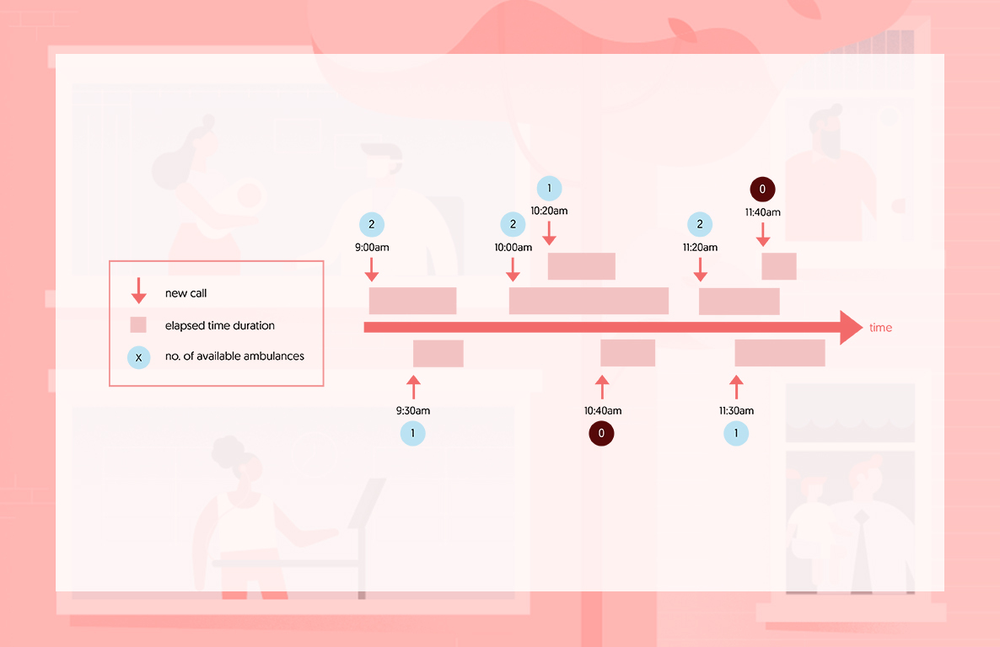
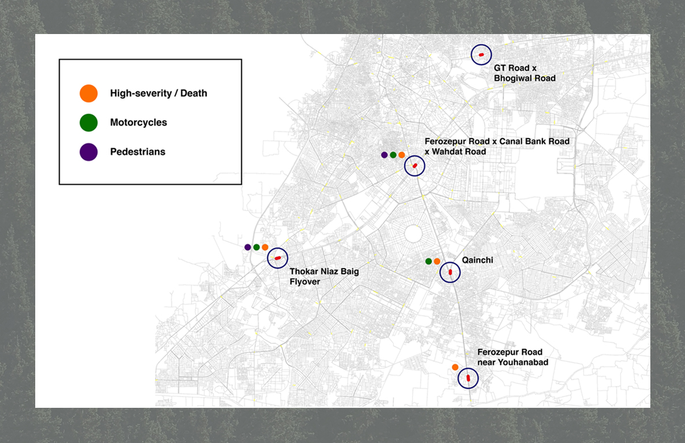
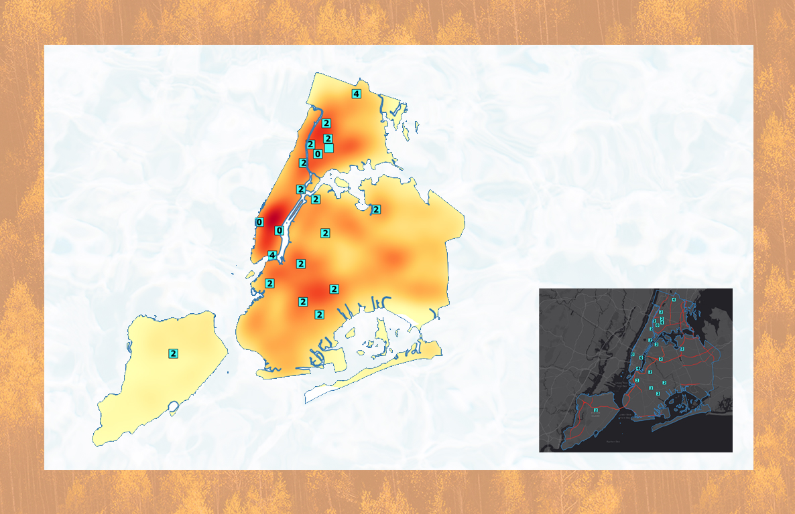
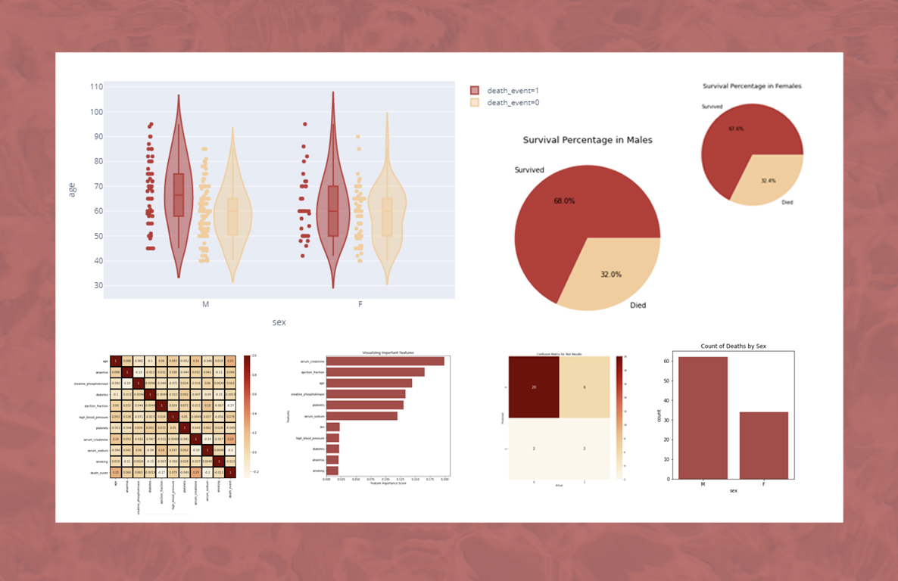

About Me
I’m a graduate student at UIUC, currently carving my path in the world of data and machine learning.
I have worked in the industry as a data analyst in the domains of healthcare and intelligent
transportation. We’re all producing so much data in today’s age, and the processes involved in
utilizing this data for productive means is what excites me. I’m also a huge soccer fan, and
I like taking photographs and creating digital art too.
Data-Driven Optimization of EMS Resources

Going beyond an aggregated data analysis to allocate ambulances in a way that reduces the likelihood of the nearest ambulances being unavailable.
Road Traffic Accident Hotspot Identification

Identifying Lahore, Pakistan’s major accident hotspots for motor cyclists and pedestrians using statistical analysis techniques.
Optimizing New York's
Ambulances Using CPLEX

Using IBM’s ILOG CPLEX Optimizer python package to solve the Double Standard Problem with New York City as an example.
Exploring Heart
Failure with Data

An extensive data analysis to explore contributing factors towards heart failure among patients in Faisalabad, Pakistan.
Transaction Fraud Detection (ongoing)
Employing data mining algorithms for pattern discovery in an attempt to better understand fraudulent credit card transactions.
Movie Review Prediction Using Regression Models
A basic sentiment analyzer using 50,000 movie reviews, achieving a 73% accuracy.